YAY Sustainable
YAY Sustainable
Restaurante Orgánico YAY
Nuestro restaurante ofrece una experiencia gastronómica única con ingredientes 100% orgánicos cultivados en nuestra huerta local y productos de proveedores sostenibles de la región.
Menú 100% natural y sostenible
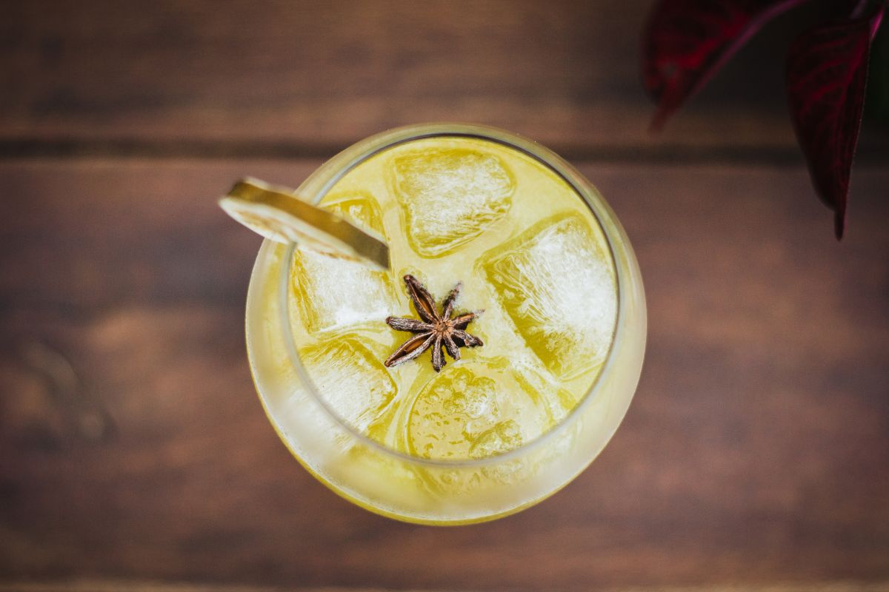
Elixir Vitall
La fuerza de la naturaleza en una bebida
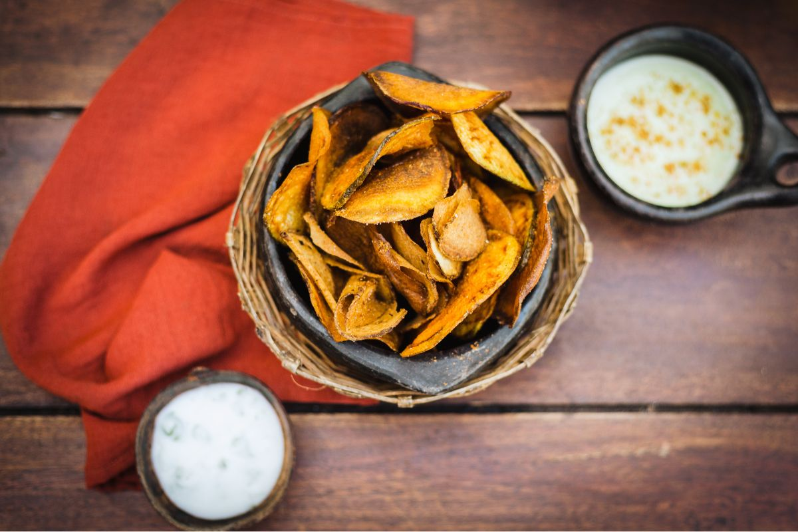
Tesoro de la Tierra
Ingredientes cultivados en armonía con el ecosistema
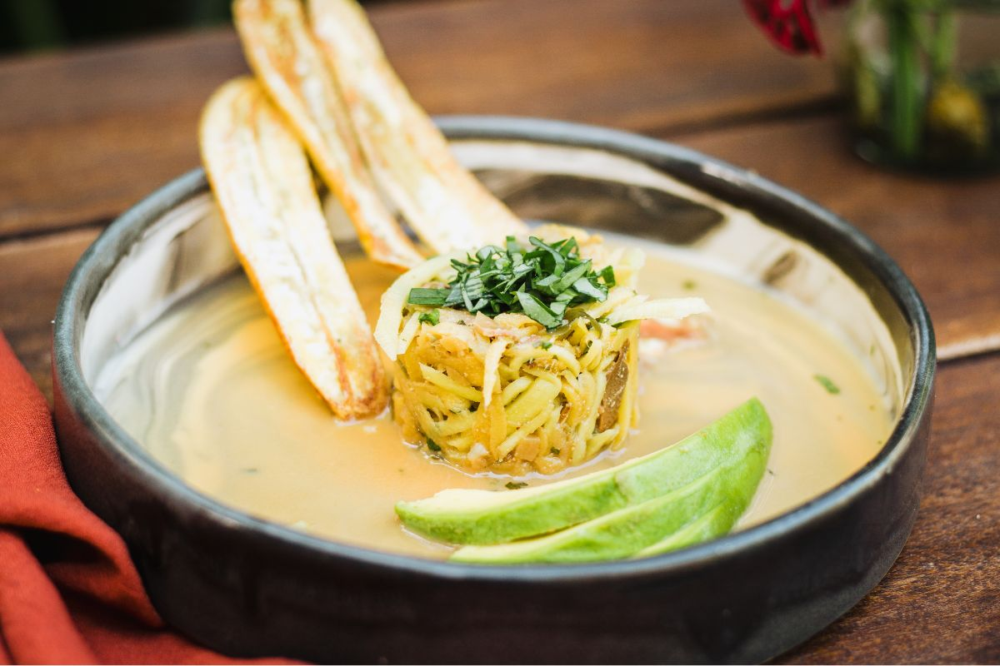
Fusión de la Tierra
Armonía de sabores naturales
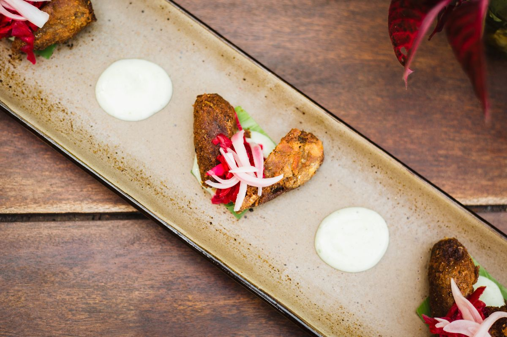
Capricho Dulce
Postre ético que endulza el paladar y el planeta
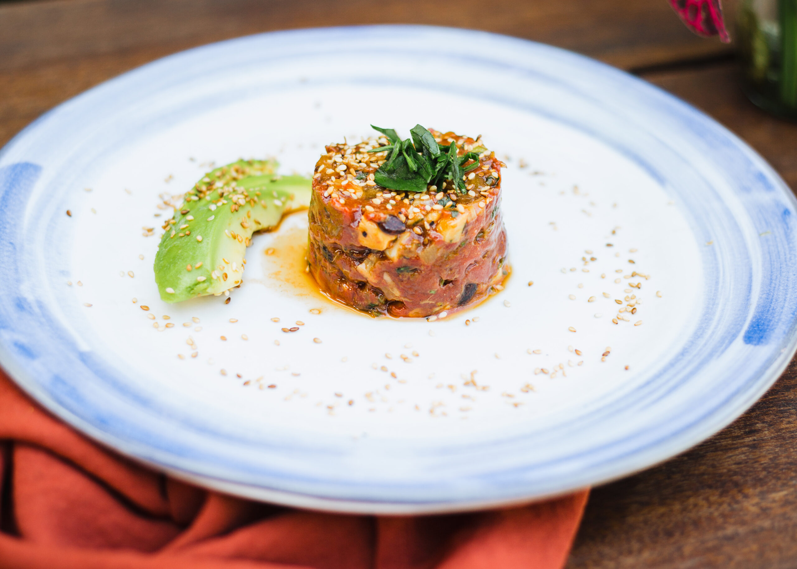
Creación Estacional
El chef transforma los ingredientes del día en arte
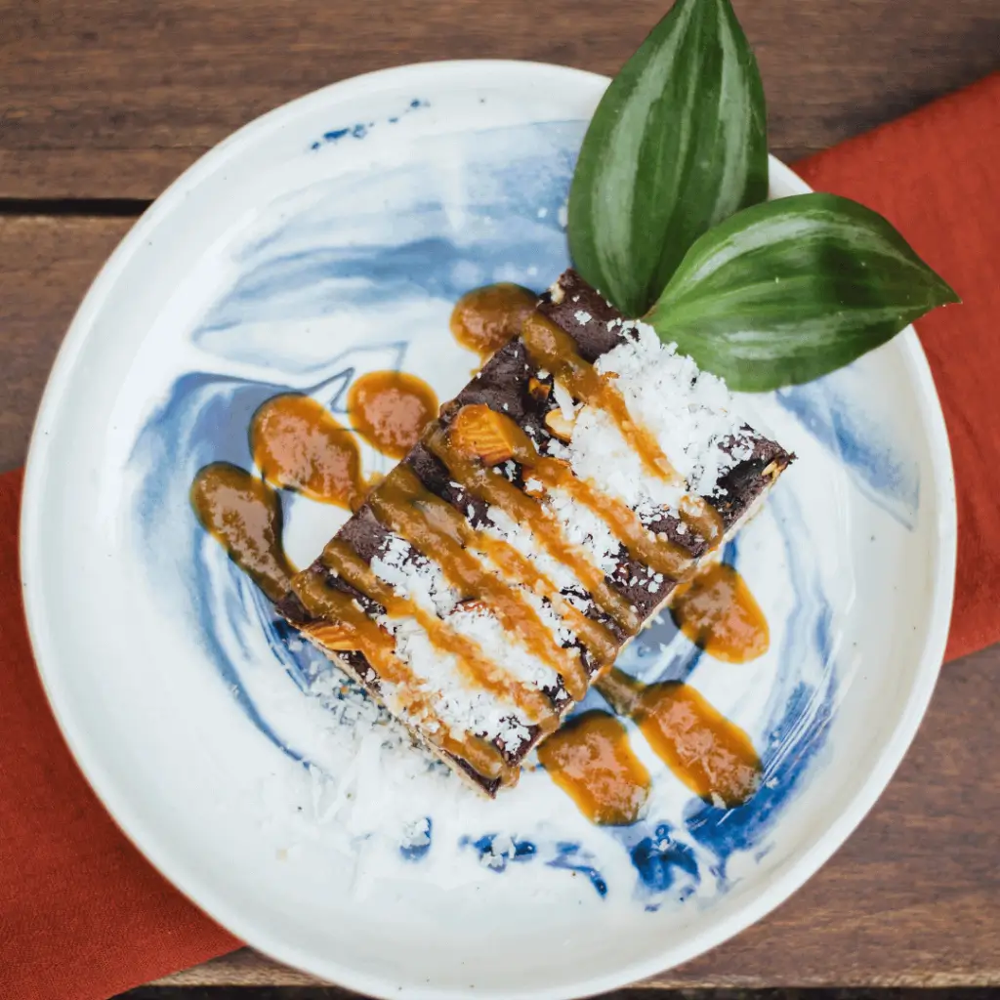
Ritual Matutino
Desayuno que honra los ciclos naturales
Nuestro Compromiso Sostenible
En el Restaurante YAY, cada plato cuenta una historia de respeto por la tierra y sus recursos. Nuestras prácticas incluyen:
- Abastecimiento local de ingredientes (menos de 50km)
- Huerta orgánica propia
- Cero plásticos de un solo uso
- Compostaje de todos los residuos orgánicos
- Energía solar para nuestra cocina
- Apoyo a comunidades agrícolas locales
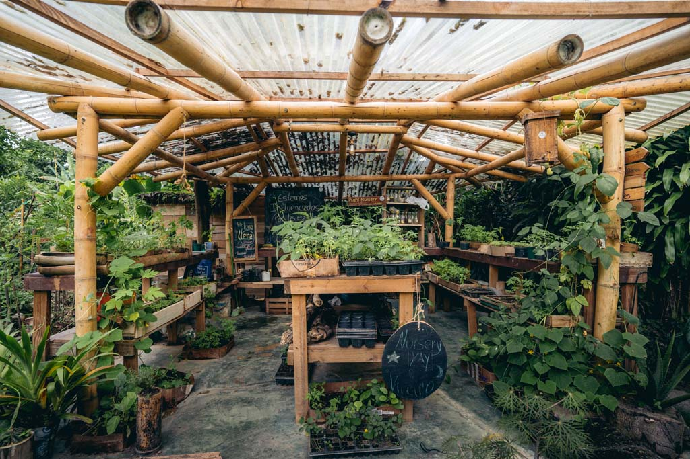
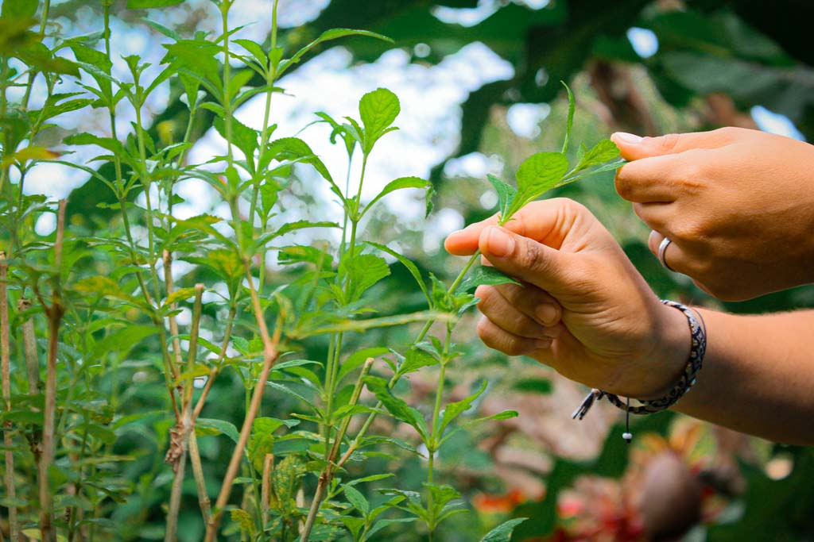
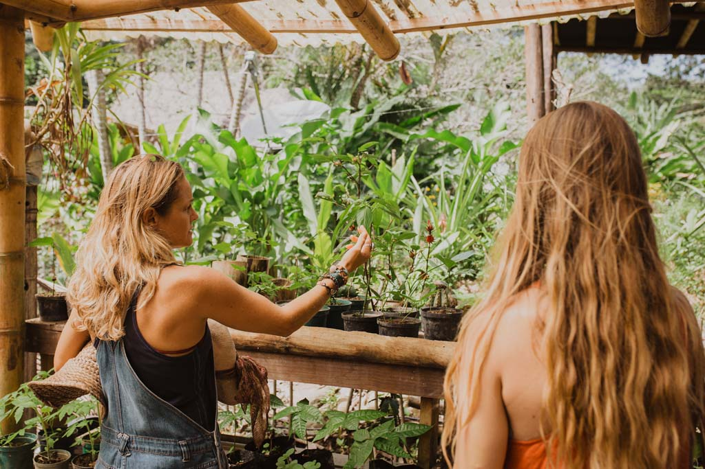
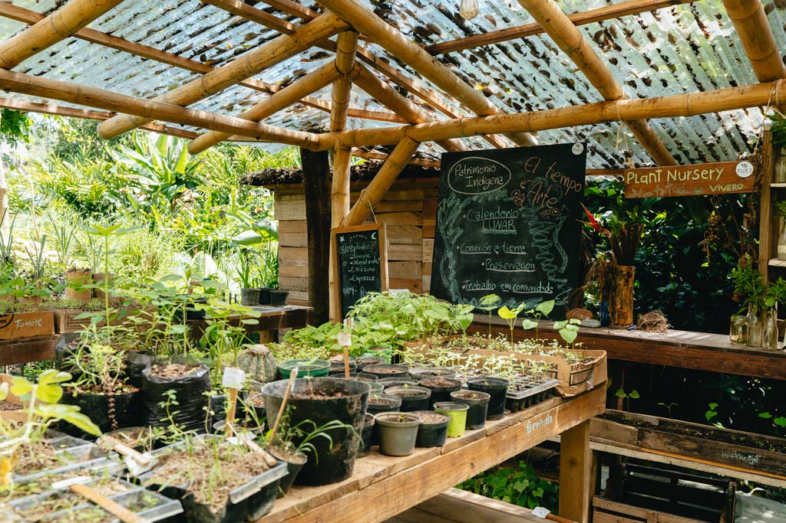
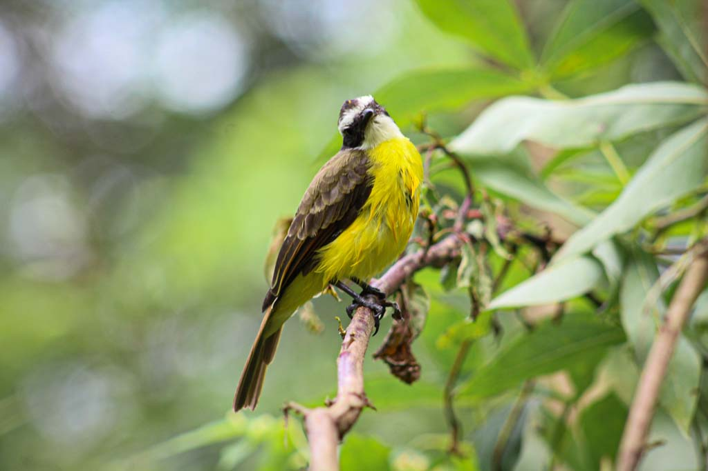
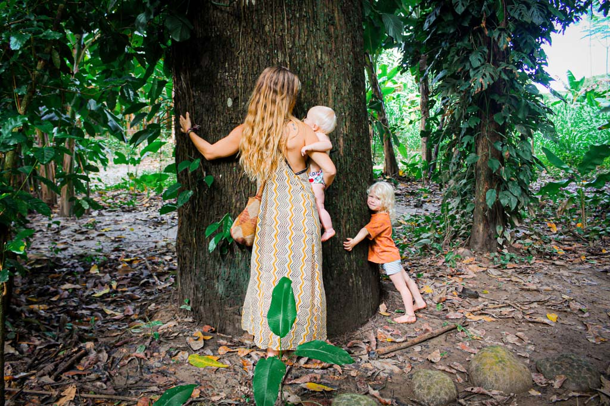